🎯 O que você vai conseguir fazer depois desse capítulo
- Separar a cintura escapular (clavícula e escápula) da porção livre do membro superior e contar os ossos de cada segmento.
- Reconhecer os acidentes ósseos da clavícula, da escápula, do úmero, do rádio e da ulna, com as inserções musculares e ligamentares de cada um.
- Nomear, em ordem, os 8 ossos do carpo, os 5 metacarpais e as 14 falanges.
- Descrever as articulações esternoclavicular, acromioclavicular, glenoumeral, do cotovelo, radioulnares, do punho e da mão: tipo, superfícies, ligamentos, movimentos e clínica.
- Ligar cada fratura clássica (clavícula, colo cirúrgico, diáfise do úmero, Colles, escafoide) à estrutura que fica em risco.
🟢 Sobre as fontes: a aula da Dra. Jasinta Vázquez (slides) cobre a osteologia do membro superior. As articulações não aparecem nos slides; entram aqui pela anatomia padrão (Latarjet, Gray, Moore), porque fazem parte do tema do capítulo e caem em prova.
🦴 Visão geral: o esqueleto do membro superior
| Segmento | Ossos | Nº |
|---|
| Cintura escapular | Clavícula e escápula | 2 |
| Braço | Úmero | 1 |
| Antebraço | Rádio (lateral) e ulna (medial) | 2 |
| Carpo | 8 ossos curtos em 2 fileiras | 8 |
| Metacarpo | 5 ossos longos (I a V, do polegar ao mínimo) | 5 |
| Falanges | 3 em cada dedo, exceto o polegar (2) | 14 |
📌 Conta de prova: porção livre = 1 + 2 + 8 + 5 + 14 = 30 ossos; com a cintura escapular, 32 ossos por membro (64 nos dois lados). A única ligação óssea direta do membro superior com o esqueleto axial é a articulação esternoclavicular; a escápula fica presa ao tronco só por músculos.
🧠 Mnemônico de ordem: o membro desce na ordem C-E-U-R-U-C-M-F: Clavícula, Escápula, Úmero, Rádio, Ulna, Carpo, Metacarpo, Falanges.
〰️ Clavícula
Osso longo alongado, estendido do esterno à escápula. É o único osso longo que se forma por ossificação intramembranosa e o primeiro osso do corpo a ossificar. Funciona como escora que mantém o ombro afastado do tórax.
| Aspecto | Descrição |
|---|
| Forma e posição | Em S itálico: convexa para a frente no 2/3 medial e côncava para a frente no 1/3 lateral. Fica quase horizontal, logo acima da 1ª costela. |
| Orientação | Extremidade mais grossa = medial (esternal); a face inferior é a que tem o sulco (levemente côncava); a borda convexa anterior fica perto da extremidade medial. |
| Extremidade esternal | Articular: articula-se com a incisura clavicular do manúbrio (e apoia-se na 1ª cartilagem costal) pela articulação esternoclavicular. |
| Extremidade acromial | Achatada e articular: faceta para o acrômio da escápula (articulação acromioclavicular). |
| Face superior | Origem do ECM, peitoral maior e deltoide; inserção do trapézio. Fica logo sob a pele (subcutânea). |
| Face inferior | Tuberosidade costal (ligamento costoclavicular, medial); sulco do subclávio (músculo subclávio); tubérculo conoide e linha trapezoide (ligamento coracoclavicular, lateral); forame nutrício. |
| Bordas | Anterior e posterior (deltoide e peitoral maior na anterior; trapézio na posterior). |
⚠️ Atenção — as fontes divergem: o slide (p. 8) lista o ligamento coracoacromial na face inferior da clavícula. Esse ligamento vai da coracoide ao acrômio, os dois na escápula; não se prende na clavícula. O que se prende na face inferior da clavícula é o ligamento coracoclavicular (conoide + trapezoide). Na prova, responda coracoclavicular.
🩺 Clínica: a clavícula é o osso mais fraturado na infância. A fratura típica ocorre na junção dos terços médio e lateral (ponto mais fino, onde as curvas se encontram): o fragmento medial sobe (tração do ECM) e o lateral desce (peso do braço e tração de peitoral maior e deltoide). Atrás dela passam a artéria e veia subclávias e o plexo braquial, em risco nas fraturas desviadas.
🔺 Escápula
Osso plano e triangular, apoiado na parte superior, posterior e lateral da caixa torácica (aproximadamente das costelas 2 a 7). Tem grande mobilidade, porque só se prende ao tronco por músculos. Estrutura: osso compacto e esponjoso, muito fino na fossa infraespinal e na fossa supraespinal.
🧭 Como orientar: a face côncava (costal) fica voltada para a frente, o vértice agudo (ângulo inferior) para baixo e as duas projeções (acrômio e coracoide) para o lado.
| Parte | Acidentes e inserções |
|---|
| Face costal (anterior) | Fossa subescapular (origem do subescapular); cristas para o serrátil anterior junto à borda medial |
| Face posterior | Convexa. A espinha da escápula sobe oblíqua, para trás, para cima e para o lado, e a divide em fossa supraespinal (supraespinal) e fossa infraespinal (infraespinal) |
| Espinha | Lábio superior: trapézio; lábio inferior: deltoide. Lateralmente se espessa e forma o acrômio |
| Acrômio | Articula-se com a clavícula; origem do deltoide; fixa o ligamento coracoacromial |
| Borda medial (vertebral) | Serrátil anterior (face costal), romboide menor (acima) e maior (abaixo da espinha); levantador da escápula no ângulo superior |
| Borda lateral (axilar) | Termina na cavidade glenoidal; tubérculo infraglenoidal (cabeça longa do tríceps); redondo menor e redondo maior |
| Borda superior | Tem a incisura da escápula, fechada pelo ligamento transverso superior: o nervo supraescapular passa por baixo e a artéria supraescapular por cima |
| Ângulo superior | Levantador da escápula |
| Ângulo inferior | Fibras de dorsal largo e redondo maior; apoio do serrátil anterior; referência no nível de T7 |
| Ângulo lateral | Cavidade glenoidal (articula com a cabeça do úmero); tubérculos supra e infraglenoidal (cabeça longa do bíceps e do tríceps) |
| Processo coracoide | Inserção do peitoral menor; origem da cabeça curta do bíceps e do coracobraquial; ligamentos coracoclavicular, coracoacromial e coracoumeral |
📌 Triângulo das bordas: medial = muita musculatura de estabilização (serrátil, romboides); lateral = glenoide, tríceps e redondos; superior = incisura. As três bordas e os três ângulos (superior, inferior, lateral) são a base da pergunta de prova.
🩺 Clínica: lesão do nervo torácico longo (serrátil anterior) solta a borda medial e causa a escápula alada. Fraturas da escápula são raras e indicam trauma de alta energia. A cabeça do úmero se apoia numa glenoide rasa, o que explica a instabilidade do ombro.
⚠️ Atenção — as fontes divergem: o slide (p. 21) coloca a coracoide e o romboide maior no ângulo inferior/lateral. Pela anatomia padrão, o romboide maior se insere na borda medial (abaixo da espinha), não no ângulo inferior, e a coracoide é um processo que se projeta da escápula, e não parte do ângulo lateral (o ângulo lateral é a glenoide com o colo).
💪 Úmero
Osso longo do braço, com corpo (diáfise) e duas extremidades (epífises), superior e inferior. O corpo é cilíndrico em cima, triangular no meio e achatado/oval embaixo; tem 3 faces e 3 bordas.
Corpo
| Face / borda | Acidentes e inserções |
|---|
| Face anterolateral | Tuberosidade deltóidea (em V): inserção do deltoide. O braquial origina-se na face anterior, logo abaixo da V deltóidea |
| Face anteromedial | Forame nutrício; inserção do coracobraquial (rugosidade no terço médio); origem do braquial; o dorsal largo e o redondo maior se prendem mais acima, no sulco e na crista |
| Face posterior | Sulco do nervo radial (canal de torção): nervo radial e artéria braquial profunda; origem do tríceps braquial (cabeça lateral acima do sulco, medial abaixo) |
| Borda anterior | Desce do tubérculo maior, forma a V deltóidea e termina na fossa coronóidea |
| Borda lateral | Interrompida pelo sulco do nervo radial; termina na crista supracondilar lateral e no epicôndilo lateral |
| Borda medial | Do tubérculo menor ao epicôndilo medial (crista supracondilar medial) |
⚠️ Atenção — as fontes divergem: o slide (p. 33) diz que no sulco passa a artéria braquial. Quem acompanha o nervo radial no sulco é a artéria braquial profunda (profunda do braço); a artéria braquial desce na face medial do braço, com o mediano. O mesmo vale para a lista de inserções da p. 28: o braquial origina-se no úmero, ele não se insere aí.
Extremidade superior
| Acidente | O que tem |
|---|
| Cabeça | Porção de esfera, articula-se com a glenoide (articulação glenoumeral) |
| Colo anatômico | Sulco logo abaixo da cabeça; limite da inserção da cápsula articular |
| Tubérculo menor (troquín) | Inserção do subescapular; a crista do tubérculo menor recebe o redondo maior |
| Tubérculo maior (troquíter) | Inserção do supraespinal, infraespinal e redondo menor (de cima para baixo); a crista do tubérculo maior recebe o peitoral maior |
| Sulco intertubercular (corredera bicipital) | Tendão da cabeça longa do bíceps (com bainha sinovial); no assoalho insere o dorsal largo |
| Colo cirúrgico | Logo abaixo dos tubérculos; local mais comum de fratura. Perto passam o nervo axilar e a artéria circunflexa posterior do úmero |
🧠 “Lady between two Majors”: o dorsal largo (lady = latissimus) fica no assoalho do sulco, entre o peitoral maior (lábio lateral) e o redondo maior (lábio medial). O manguito rotador (SITS) fica todo nos tubérculos: Supraespinal, Infraespinal, Teres minor (redondo menor) no maior; Subescapular no menor.
Extremidade inferior
| Acidente | Função |
|---|
| Tróclea (medial) | Articula-se com a ulna (incisura troclear) |
| Côndilo (capítulo) (lateral) | Articula-se com a cabeça do rádio |
| Canal condilotroclear | Sulco entre o capítulo e a tróclea |
| Fossa radial | Anterior e lateral; recebe a cabeça do rádio na flexão |
| Fossa coronóidea | Anterior e medial; recebe o processo coronoide da ulna na flexão |
| Fossa do olécrano | Posterior; recebe o olécrano da ulna na extensão |
| Epicôndilo medial (epitróclea) | Origem dos flexores/pronadores comuns; atrás passa o nervo ulnar (sulco do nervo ulnar) |
| Epicôndilo lateral (epicôndilo) | Origem dos extensores comuns e do supinador |
⚠️ Atenção — as fontes divergem: o slide (p. 40) escreve “epicôndilo medial ou epicôndilo” e “epicôndilo lateral ou epitróclea”, trocados. O correto: epitróclea = epicôndilo medial (flexores, nervo ulnar) e epicôndilo (lateral) = extensores (epicondilite lateral, “cotovelo de tenista”). Medial inflamado = “cotovelo de golfista”.
🩺 Clínica por segmento: colo cirúrgico → nervo axilar (anestesia sobre o deltoide, perda da abdução); diáfise, no sulco → nervo radial (mão caída); supracondilar (criança) → artéria braquial e nervo mediano (e interósseo anterior); epicôndilo medial → nervo ulnar.
🌓 Rádio
Osso longo do lado lateral do antebraço (lado do polegar). Tem corpo triangular e duas extremidades; ao contrário da ulna, o rádio é fino em cima e largo embaixo: é ele que forma a maior parte da articulação do punho.
| Parte | Acidentes e inserções |
|---|
| Extremidade superior | Cabeça (fóvea articular para o capítulo do úmero; circunferência articular para a incisura radial da ulna), colo e tuberosidade do rádio (inserção do bíceps braquial) |
| Face anterior | Forame nutrício; origem do flexor longo do polegar; no quarto distal, inserção do pronador quadrado |
| Face lateral | Convexa; inserção do supinador (proximal) e do pronador redondo (no meio, ponto de maior convexidade) |
| Face posterior | Origem do abdutor longo e extensor curto do polegar |
| Bordas | Interóssea (membrana interóssea do antebraço; é a mais aguda), anterior (parte da raiz inferior da tuberosidade) e posterior (pouco marcada) |
| Extremidade inferior | Face articular carpal (articulação radiocarpal), processo estiloide do rádio (lateral; base recebe o braquiorradial), incisura ulnar (articulação radioulnar distal) e tubérculo dorsal (de Lister) |
⚠️ Atenção — as fontes divergem: o slide (p. 45–48) lista os extensores radiais curto e longo do carpo na face lateral do rádio. Eles não se inserem no rádio: nascem no epicôndilo lateral/crista supracondilar e vão até a base do 2º e do 3º metacarpais. Apenas passam sobre o rádio. Na prova, o que se insere na face lateral do rádio é supinador e pronador redondo.
🩺 Clínica: a fratura de Colles (extremidade distal do rádio, fragmento distal desviado para o dorso, aspecto de “dorso de garfo”) vem de queda sobre a mão estendida, sobretudo em idosas com osteoporose. O processo estiloide do rádio fica cerca de 1 cm mais distal que o da ulna. Na criança, tração brusca da mão pode causar subluxação da cabeça do rádio (cotovelo de babá) pelo escape do ligamento anular.
🌗 Ulna (Cúbito)
Osso longo do lado medial do antebraço. É grosso em cima e fino embaixo (o contrário do rádio): forma a maior parte do cotovelo, mas não chega ao carpo, porque o disco articular a separa dele.
| Parte | Acidentes e inserções |
|---|
| Extremidade superior | Olécrano (inserção do tríceps) e processo coronoide, que formam a incisura troclear (abraça a tróclea do úmero); incisura radial (recebe a cabeça do rádio); tuberosidade da ulna (inserção do braquial); fossa e crista do supinador |
| Face anterior | Forame nutrício; origem do flexor profundo dos dedos; origem do pronador quadrado (quarto distal) |
| Face posterior | Ancôneo, extensor ulnar do carpo, supinador (crista) e os músculos profundos da região posterior: abdutor longo do polegar, extensores curto e longo do polegar e extensor do indicador |
| Face medial | Origem do flexor profundo dos dedos; o restante é subcutâneo (fáscia antebraquial e pele) |
| Bordas | Anterior marcada; posterior em S itálico, subcutânea e palpável em todo o comprimento; interóssea (membrana interóssea) |
| Extremidade inferior | Cabeça com circunferência articular (articula com a incisura ulnar do rádio) e processo estiloide da ulna |
⚠️ Atenção — as fontes divergem: o slide (p. 60) escreve “cavidade articular: tróclea humeral” para a ulna. A ulna não tem tróclea: ela tem a incisura troclear, que encaixa na tróclea do úmero.
🩺 Clínica: fratura de Monteggia = ulna proximal + luxação da cabeça do rádio; fratura de Galeazzi = rádio distal + luxação da articulação radioulnar distal. Fratura de olécrano: o tríceps puxa o fragmento. No cotovelo, o nervo ulnar passa atrás do epicôndilo medial (“funny bone”), em risco nesses traumas.
🧠 Rádio × Ulna: o Rádio fica do lado do polegar (lateral), tem cabeça pequena em cima e é largo embaixo, onde forma o punho. A Ulna fica do lado do dedo mínimo (medial), tem o olécrano grande em cima e é fina embaixo.
✋ Ossos da Mão
Carpo: 8 ossos curtos (cuboides) em duas fileiras
| Fileira | De lateral para medial |
|---|
| Proximal | Escafoide · Semilunar · Piramidal · Pisiforme |
| Distal | Trapézio · Trapezoide · Capitato (grande) · Hamato (ganchoso) |
🧠 Frase: “Eu Sempre Penso em Pizza; Todo Time Come Hambúrguer” = Escafoide, Semilunar, Piramidal, Pisiforme / Trapézio, Trapezoide, Capitato, Hamato.
| Osso | O que cai em prova |
|---|
| Escafoide | Maior da fileira proximal, em forma de barco; o mais fraturado. Forma o assoalho da tabaqueira anatômica; tubérculo palpável na palma. Irrigação retrógrada (entra pelo polo distal) |
| Semilunar | Articula-se com o rádio (com o escafoide) e com o capitato; a luxação anterior comprime o nervo mediano. Osso da doença de Kienböck |
| Piramidal | Forma piramidal; sustenta o pisiforme |
| Pisiforme | Sesamoide no tendão do flexor ulnar do carpo; fica na frente do piramidal e forma a parede medial do túnel do carpo |
| Trapézio | Articula-se com o 1º metacarpal em sela: movimento de oposição do polegar |
| Trapezoide | Menor da fileira distal; articula com o 2º metacarpal |
| Capitato | O maior do carpo, no centro; articula com o 3º metacarpal |
| Hamato | Tem o hâmulo (gancho), parede medial do túnel do carpo; canal ulnar (de Guyon) com o pisiforme: passam nervo e artéria ulnares |
🩺 Túnel do carpo: assoalho = sulco do carpo (ossos); teto = retináculo dos flexores. Lateral: tubérculo do escafoide e trapézio; medial: pisiforme e hâmulo do hamato. Passam os 9 tendões flexores e o nervo mediano (síndrome do túnel do carpo).
🩺 Fratura do escafoide: dor na tabaqueira anatômica após queda sobre a mão estendida. O RX inicial pode ser normal. Como o sangue entra pelo polo distal e vai “para trás”, fratura do colo ou do terço proximal pode isolar o polo proximal e levar à necrose avascular e à pseudoartrose.
Metacarpo: 5 ossos longos
- Constituem o esqueleto da palma e do dorso da mão; numerados I a V, do polegar ao mínimo.
- Cada um tem base (proximal, articula com o carpo), corpo e cabeça (distal, os “nós” dos dedos).
- O 1º é mais curto e mais móvel; o 3º tem um processo estiloide na base (extensor radial curto do carpo).
🩺 Clínica: fratura do boxeador (colo do 5º metacarpal) e fratura de Bennett (base do 1º metacarpal, com luxação da articulação carpometacarpal do polegar).
Falanges: 14 ossos longos
- Cada dedo tem proximal, média e distal; o polegar tem só proximal e distal (2+4×3 = 14).
- Cada falange tem base, corpo e cabeça (tróclea); a falange distal termina na tuberosidade da falange distal.
- Inserções: flexor superficial dos dedos na falange média; flexor profundo na falange distal.
🔗 Articulações do Membro Superior (complemento)
Esta seção não consta nos slides da aula; foi montada pela anatomia padrão para completar o tema do capítulo.
Resumo comparativo
| Articulação | Tipo | Superfícies | Estabilidade | Movimentos |
|---|
| Esternoclavicular | Sinovial selar, com disco articular | Extremidade esternal da clavícula + incisura clavicular do manúbrio e 1ª cartilagem costal | Lig. costoclavicular (principal), esternoclaviculares anterior e posterior, interclavicular | Elevação/depressão, protração/retração, rotação axial |
| Acromioclavicular | Sinovial plana, disco incompleto | Extremidade acromial da clavícula + acrômio | Lig. coracoclavicular (conoide + trapezoide) e acromioclavicular | Deslizamento e rotação da escápula |
| Glenoumeral | Sinovial esferóidea | Cabeça do úmero + cavidade glenoidal (aprofundada pelo lábio glenoidal) | Cápsula frouxa; manguito rotador; ligs. glenoumerais e coracoumeral | Flexão, extensão, abdução, adução, rotações, circundução |
| Cotovelo | Sinovial composta (gínglimo + trocóide) | Tróclea/ulna, capítulo/rádio, rádio/ulna | Colaterais ulnar e radial; ligamento anular | Flexão e extensão (e pronossupinação) |
| Radioulnar proximal | Sinovial trocóide | Cabeça do rádio + incisura radial da ulna | Ligamento anular do rádio | Pronação e supinação |
| Radioulnar distal | Sinovial trocóide | Cabeça da ulna + incisura ulnar do rádio | Disco articular (CFCT) | Pronação e supinação |
| Radiocarpal (punho) | Sinovial elipsóidea | Rádio + disco articular × escafoide, semilunar e piramidal | Lig. radiocarpais palmar e dorsal, colaterais radial e ulnar | Flexão, extensão, desvios radial e ulnar |
| CMC do polegar | Sinovial selar | Trapézio + base do 1º metacarpal | Cápsula e ligamentos próprios | Flexão, extensão, abdução, adução, oposição |
| Metacarpofalângicas | Sinovial condilar (elipsóidea) | Cabeça do metacarpal + base da falange proximal | Colaterais, placa palmar | Flexão, extensão, abdução e adução |
| Interfalângicas | Sinovial gínglimo | Cabeça da falange + base da seguinte | Colaterais, placa palmar | Flexão e extensão |
Cintura escapular
- Esternoclavicular: única articulação do membro superior com o esqueleto axial. O disco articular evita que a clavícula escorregue para dentro. A luxação posterior é rara, mas perigosa: a clavícula pode comprimir traqueia e grandes vasos.
- Acromioclavicular: o ligamento acromioclavicular é fraco; quem segura é o coracoclavicular. A luxação (“separação do ombro”, queda sobre o ombro) mostra a clavícula elevada: sinal da tecla de piano.
Ombro (glenoumeral)
- É a articulação mais móvel e a que mais luxa do corpo: a cabeça do úmero é grande e a glenoide é rasa.
- A cápsula é frouxa e reforçada pelos ligamentos glenoumerais (superior, médio e inferior) e coracoumeral. O ligamento transverso do úmero prende o tendão da cabeça longa do bíceps no sulco intertubercular (que atravessa a articulação, dentro da cápsula mas fora da sinovial).
- Estabilizadores dinâmicos: manguito rotador (supraespinal, infraespinal, redondo menor, subescapular). O arco coracoacromial (acrômio, ligamento coracoacromial e coracoide) forma um teto sobre o supraespinal: espaço do impacto subacromial.
- Bursa subacromial/subdeltóidea reduz o atrito sob o arco.
- Abdução: supraespinal (primeiros 15°), deltoide (15° a 90°) e rotação da escápula (ritmo escapuloumeral, cerca de 2:1 no total).
- Inervação: nervos axilar, supraescapular e peitoral lateral. Irrigação: circunflexas do úmero e supraescapular.
🩺 Clínica: a luxação é, na maioria das vezes, anteroinferior (cerca de 95%): a parte inferior da cápsula é a mais frágil (sem manguito) e o braço é forçado em abdução e rotação lateral. Pode lesionar o nervo axilar (perda da sensibilidade sobre o deltoide, o “sinal do distintivo”) e deixar a lesão de Bankart (lábio) e Hill-Sachs (cabeça do úmero).
Cotovelo e articulações radioulnares
- Uma única cápsula cobre três articulações: umeroulnar (gínglimo), umerorradial e radioulnar proximal.
- Colateral ulnar (medial; feixes anterior, posterior e transverso) e colateral radial (lateral, se mistura com o anular). O anular do rádio envolve a cabeça do rádio e a mantém contra a incisura radial da ulna.
- Pronação e supinação ocorrem nas duas radioulnares (proximal e distal), com a membrana interóssea ligando os corpos dos ossos (sindesmose). Na pronação, o rádio cruza por cima da ulna; o eixo vai da cabeça do rádio até a cabeça da ulna.
- O disco articular (complexo fibrocartilagíneo triangular) liga o rádio à ulna distal e separa a ulna do carpo.
- Inervação do cotovelo: musculocutâneo, radial, mediano e ulnar (lei de Hilton: o nervo do músculo que move a articulação a inerva).
📌 Referência clínica: com o cotovelo estendido, o olécrano e os dois epicôndilos ficam em linha reta; com o cotovelo em 90°, formam um triângulo isósceles (de Hueter). Alterados em luxações e fraturas supracondilares.
Punho e mão
- Radiocarpal (punho): elipsóidea, entre o rádio (e o disco) e a fileira proximal do carpo (escafoide, semilunar e piramidal). A ulna não participa. Movimentos: flexão, extensão, desvio radial (abdução) e ulnar (adução), circundução.
- Mediocarpal: entre as duas fileiras do carpo; soma amplitude à flexão e à extensão.
- CMC do polegar: em sela (trapézio + 1º metacarpal), o que permite a oposição; sofre de artrose (rizartrose).
- MCF (nós dos dedos): condilares, com abdução e adução em torno do 3º dedo. IFP e IFD: gínglimos, só flexão e extensão.
📸 Figuras da Aula
Figuras dos slides da Dra. Jasinta Vázquez / Dra. Liz, organizadas pelas seções do capítulo. Clique para ampliar.
Clavícula
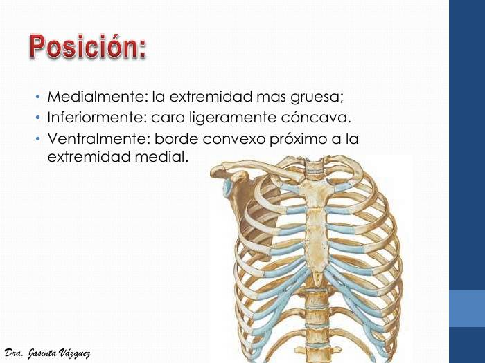
Clavícula em posição no tórax: extremidade medial mais grossa, face inferior levemente côncava e borda convexa anterior perto da extremidade medial.
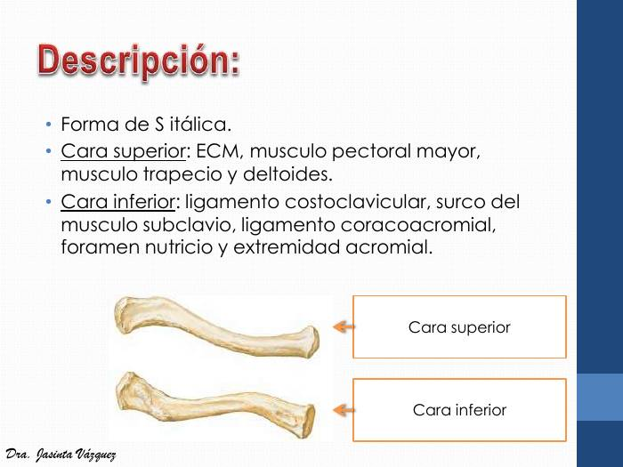
Clavícula em vista superior e inferior, com a face inferior marcada pelo sulco do subclávio e pelas inserções ligamentares (costoclavicular e coracoclavicular).
Escápula
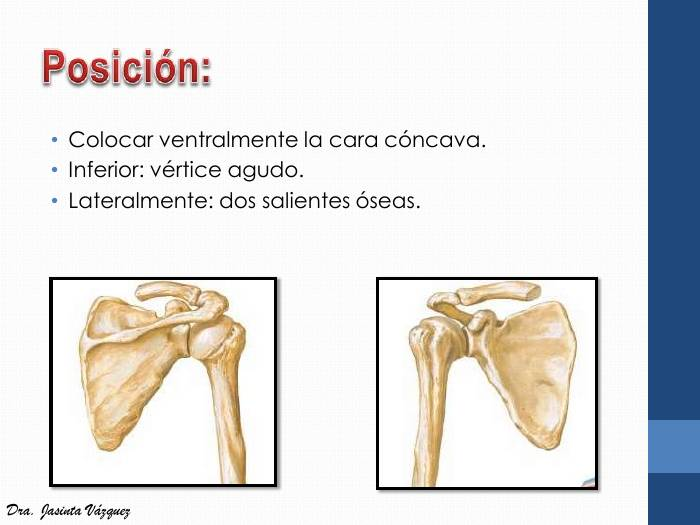
Escápula em vista anterior (face costal côncava) e posterior: vértice (ângulo inferior) agudo e duas projeções laterais (acrômio e coracoide).
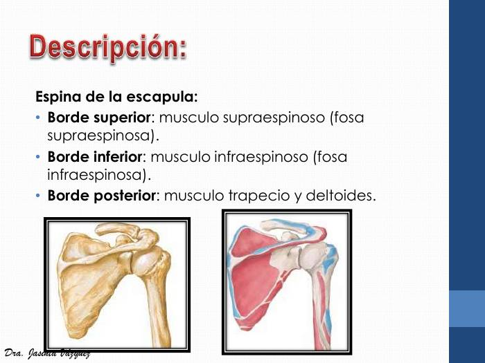
Espinha da escápula dividindo as fossas supraespinal e infraespinal; origem dos músculos supraespinal e infraespinal, e lábios para trapézio e deltoide.
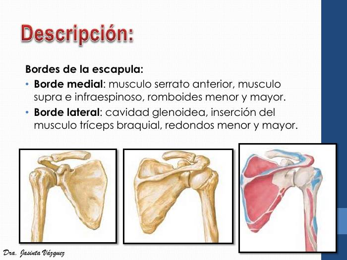
Bordas da escápula: medial (serrátil anterior, romboides, supra e infraespinal) e lateral (cavidade glenoidal, tríceps, redondos).
Úmero
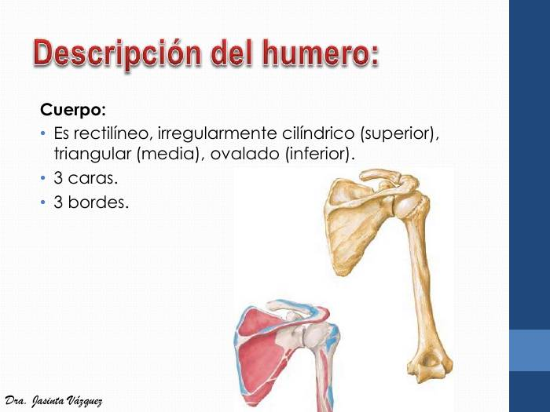
Corpo do úmero: forma cilíndrica no terço superior, triangular no médio e achatada/oval no inferior, com 3 faces e 3 bordas.
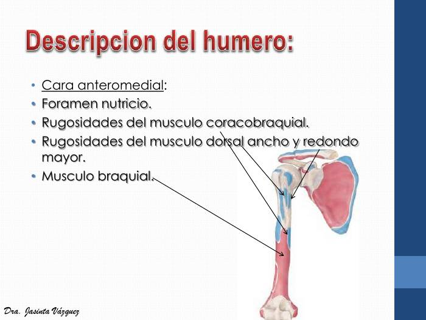
Face anteromedial do úmero: forame nutrício e rugosidades do coracobraquial, do dorsal largo e do redondo maior.
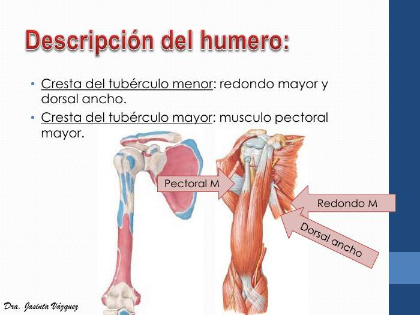
Cristas dos tubérculos do úmero: peitoral maior (tubérculo maior), redondo maior e dorsal largo (tubérculo menor / sulco intertubercular).
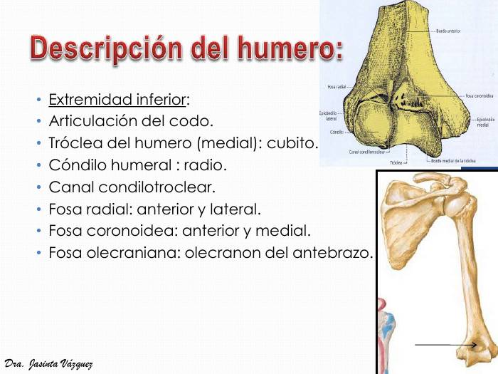
Extremidade inferior do úmero rotulada: tróclea, côndilo (capítulo), fossas radial, coronóidea e olecraniana, epicôndilos medial e lateral.
Rádio
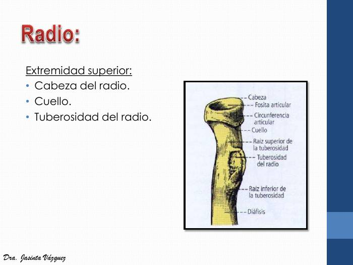
Extremidade superior do rádio: cabeça com fóvea articular e circunferência articular, colo e tuberosidade do rádio.
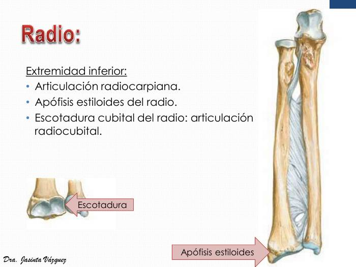
Extremidade inferior do rádio: processo estiloide, incisura ulnar (articulação radioulnar distal) e face articular para o carpo.
Ulna
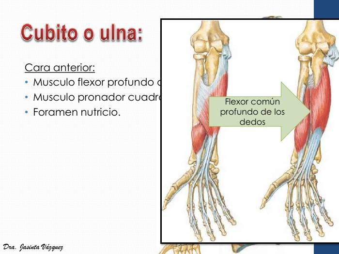
Face anterior da ulna: origem do flexor profundo dos dedos e do pronador quadrado, com o forame nutrício.
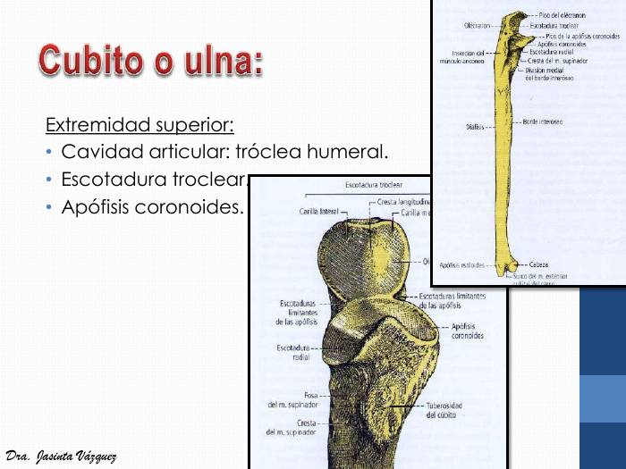
Extremidade superior da ulna rotulada: olécrano, incisura troclear, processo coronoide, incisura radial, tuberosidade e crista do supinador.
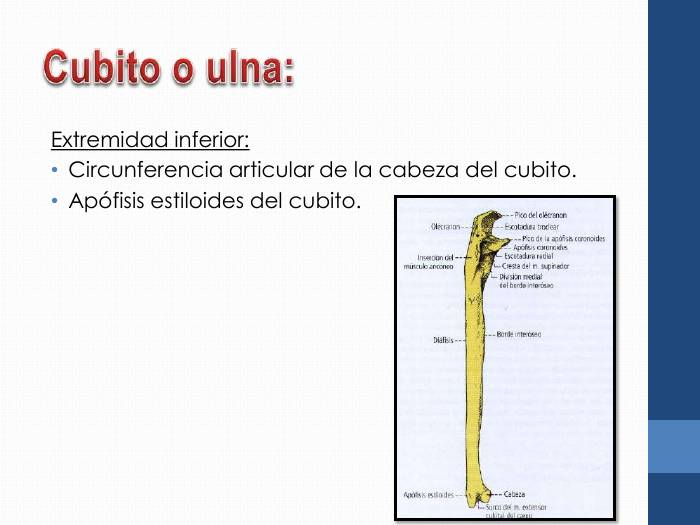
Extremidade inferior da ulna: cabeça com circunferência articular e processo estiloide.
Ossos da Mão
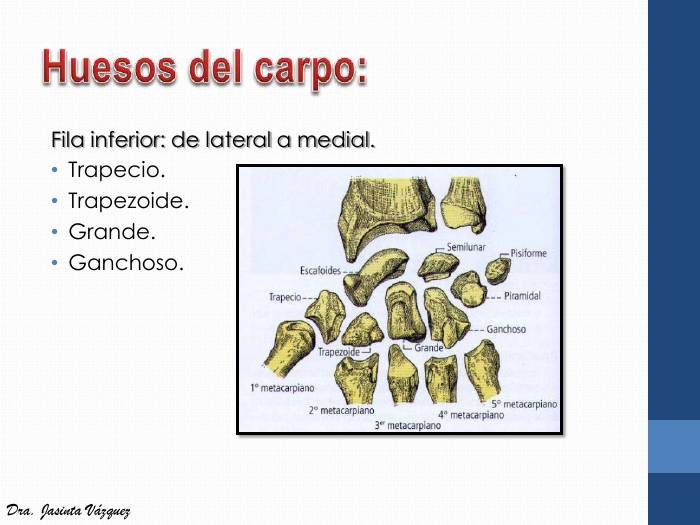
Ossos do carpo rotulados, com a fileira distal (trapézio, trapezoide, capitato, hamato) e os metacarpais.
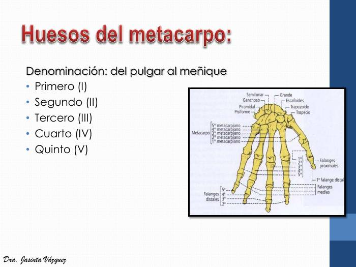
Mão completa em vista palmar: carpo, metacarpais I a V (do polegar ao mínimo) e falanges proximal, média e distal.
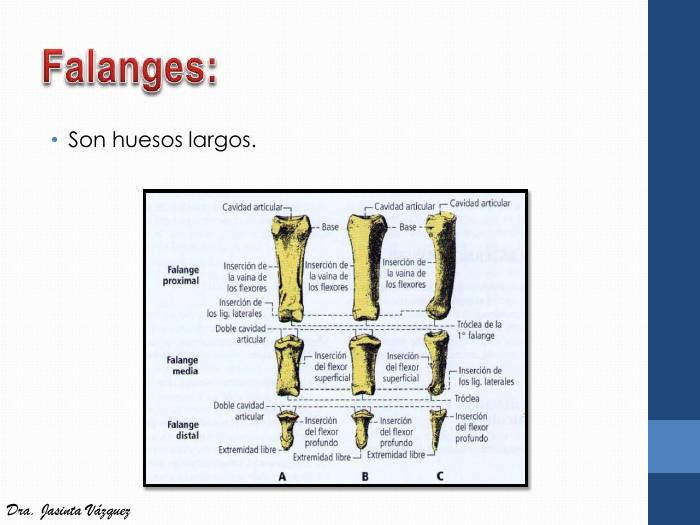
Falanges proximal, média e distal com as inserções dos flexores superficial e profundo e dos ligamentos laterais.